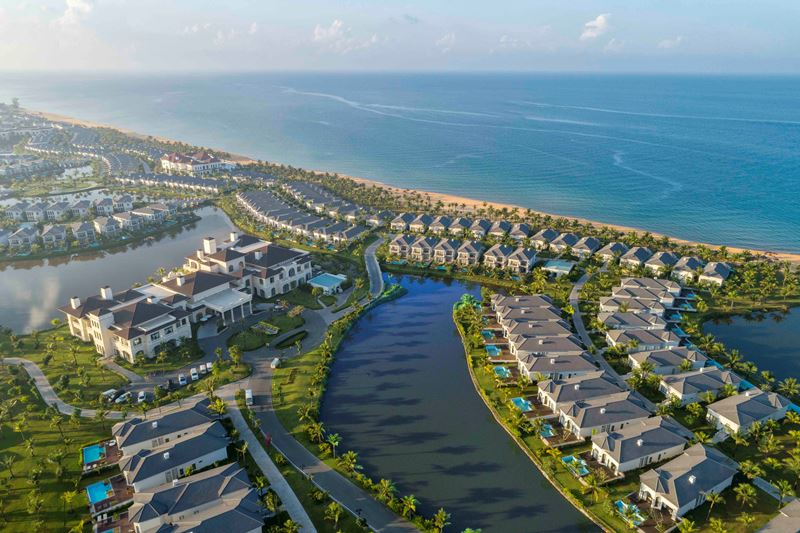
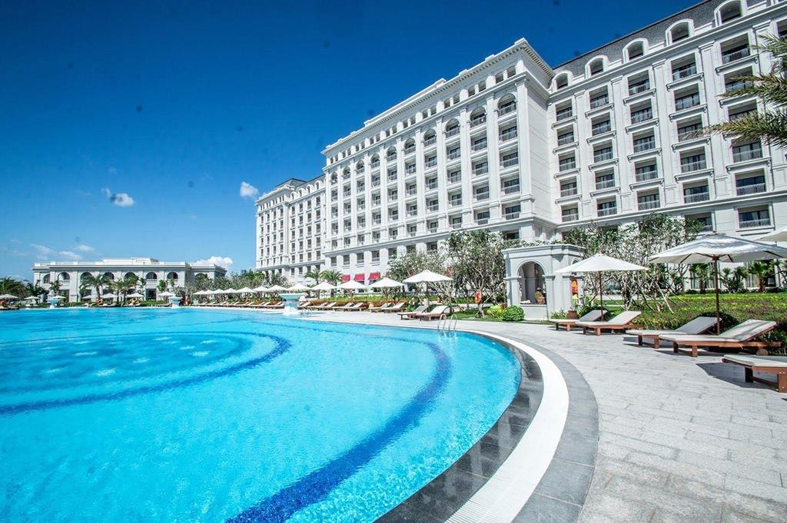
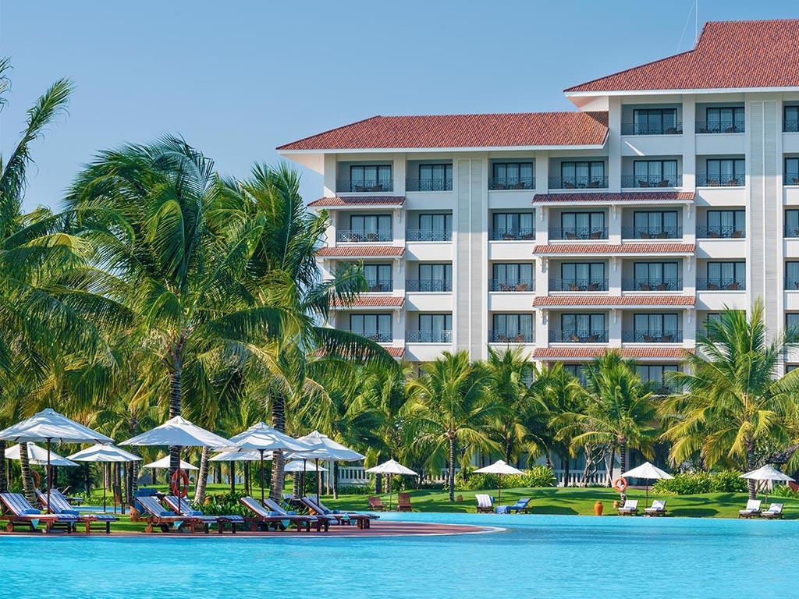

Chuyến đi du lich Phú Quốc đáng nhớ
06/2/2020
Fringed with white-sand beaches and with large tracts still cloaked in dense tropical jungle, Phu Quoc rapidly morphed from a sleepy island backwater to a must-visit beach escape for Western expats and sun-seeking tourists. Beyond the resorts lining Long Beach, rapid development beginning on the east coast and mega resorts in sight of Sao Beach, there's still ample room for exploration and escaping the sometimes littered waters.

Chuyến đi du lich Đà Nẵng đáng nhớ
06/11/2020
Lang Co Beach is lined with palm trees, the water of the nearby ocean crystal-clear and enticing, lapping onto white sand. It is a peninsula with a sparkling lagoon on one side, and the beach on the other. The area is fairly under-developed, although recent years have seen many new hotels opening. My Khe Beach is more developed, since it was a popular spot for American soldiers seeking R&R during the Vietnam-US War.

Chuyến đi du lich Nha Trang đáng nhớ
06/7/2019
Nha Trang is one of the most important tourist hubs of Vietnam, thanks to its beaches with fine and clean sand and the clear ocean water with mild temperatures all year round. There are several resorts — such as Vinpearl, Diamond Bay and Ana Mandara — and amusement and water parks, in the city and on islands off the coast. The possibly most beautiful street of Nha Trang is Tran Phu Street along the seaside, sometimes referred to as the Pacific Coast Highway of Vietnam.